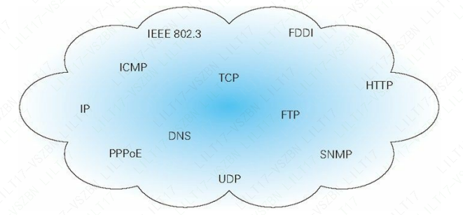
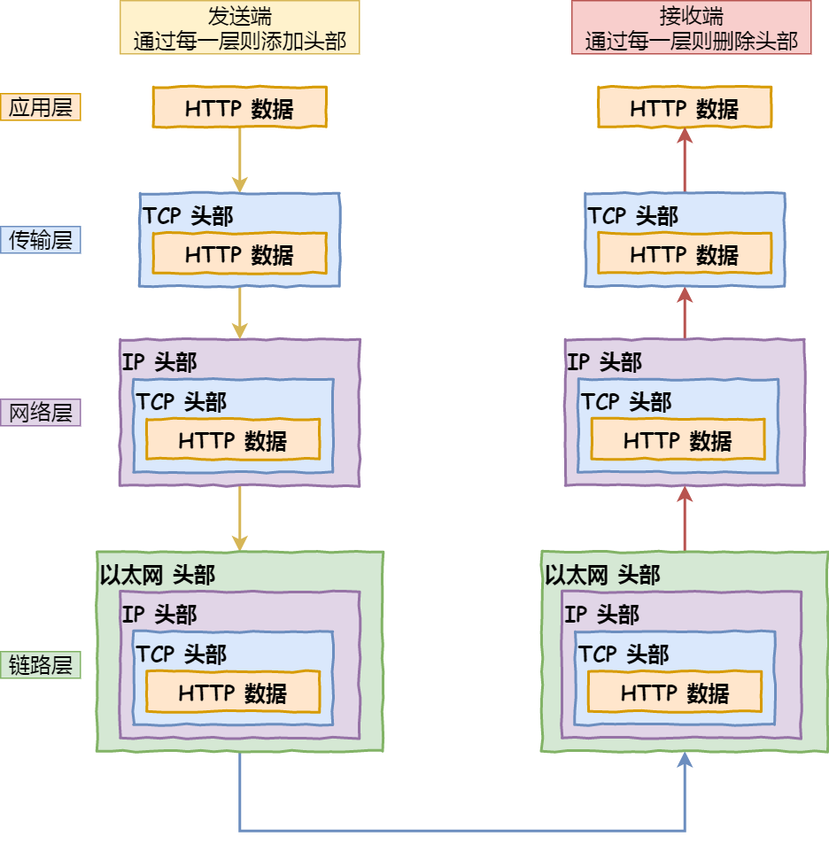
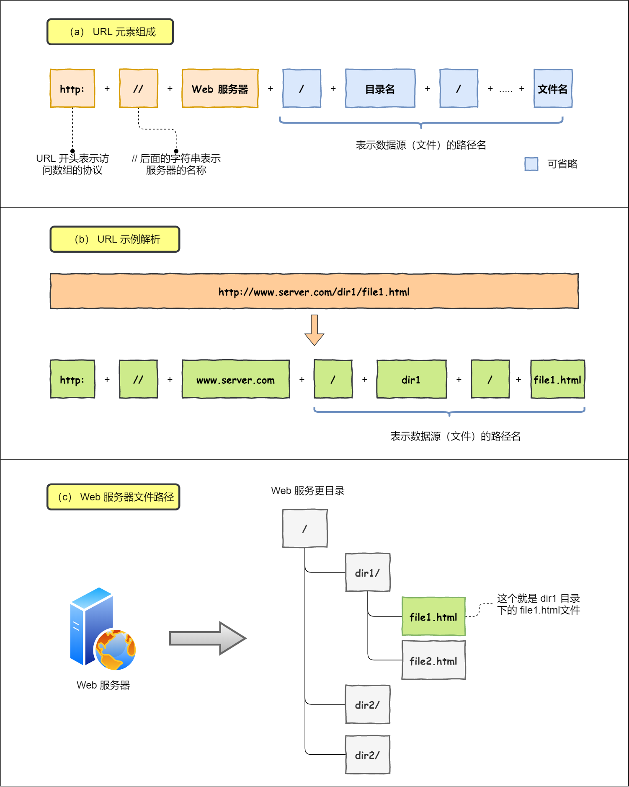
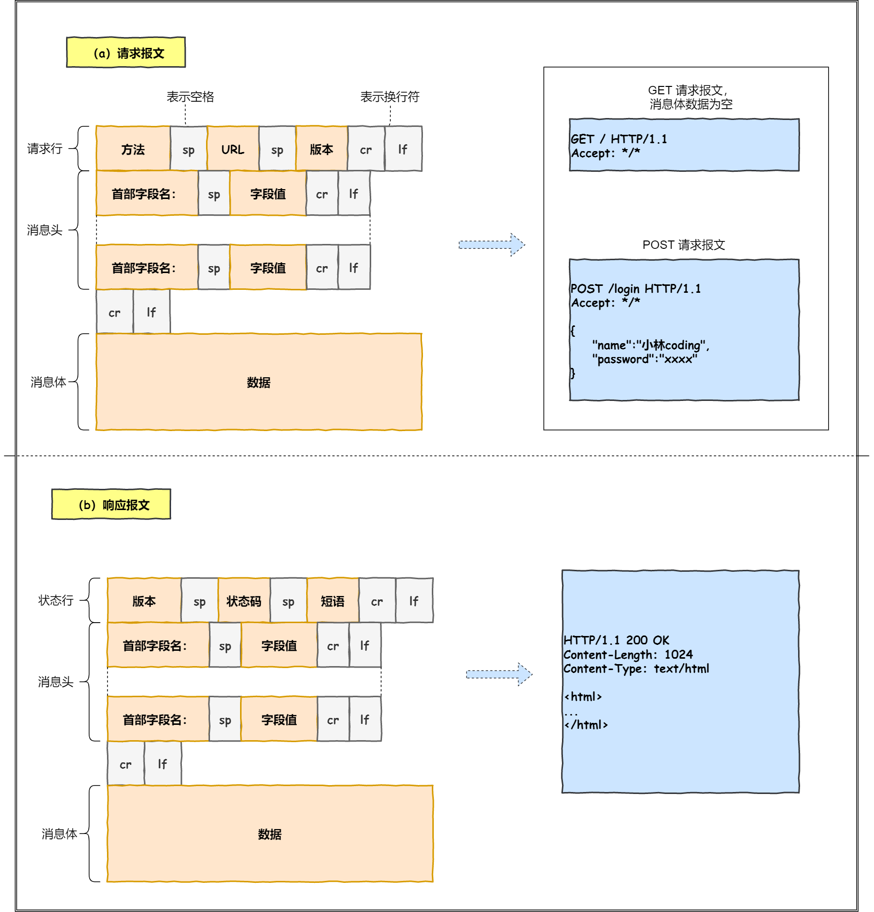
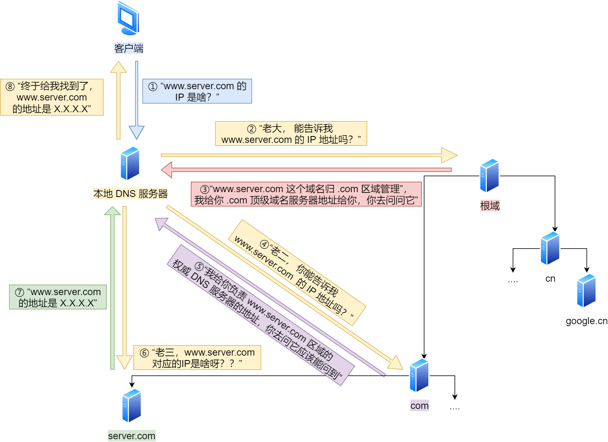
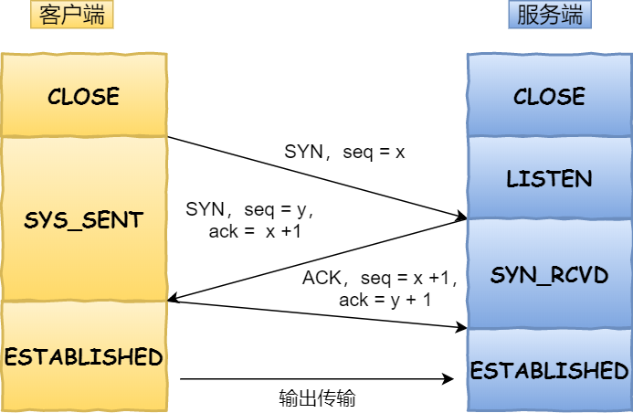

《图解HTTP》阅读手记
第一章 了解 Web 及网络基础
1、HTTP（HyperText Transfer Protocol，超文本传输协议）
1.1 为了理解 HTTP，我们有必要事先了解一下 TCP/IP 协议族
计算机与网络设备要相互通信，双方就必须基于相同的方法。比如，如何探测到通信目标、由哪一边先发起通信、使用哪种语言进行通信、怎样结束通信等规则都需要事先确定。不同的硬件、操作系统之间的通信，所有的这一切都需要一种规则。而我们就把这种规则称为协议（protocol）。

TCP/IP 协议族里重要的一点就是分层。TCP/IP 协议族按层次分别分为以下 4 层：应用层、传输层、网络层和数据链路层。（每个底层都是为上层提供服务）

1.2 各种协议的职责
- HTTP 协议：生成针对目标 Web 服务器的 HTTP 请求报文（反过来–>对 Web 服务器请求的内容进行处理）
- TCP 协议：为了方便通信，将 HTTP 请求报文分割成报文段（反过来–>重组从对方那里接收的报文段，即按序号以原来的顺序重组请求报文）
- IP 协议：搜索对方的地址，一边中转一边传送
2、一个经典八股文问题
当我们在网页浏览器（Web browser）的地址栏中输入 URL 时，Web 页面是如何呈现的？（一个数据包在网络中的心路历程）
答：用户在浏览器中输入 url 地址，浏览器首先是解析 URL，生成 HTTP 请求报文），同时解析域名得到服务器 ip 地址）（这里是先从缓存中找是否存在域名，存在就直接取 IP 地址，不存在就借助 DNS） 进行查询），然后是 TCP 三次握手）建立客户端和服务器的连接，再依次通过网络层和链路层，发送 HTTP 请求）获取服务器端的静态资源，服务器处理请求反过来发送 HTTP 响应报文）给客户端，客户端获取到页面静态资源，解析渲染页面），最后 TCP 四次挥手）关闭客户端和服务器的连接。
浏览器做的第一步工作是解析 URL

对 URL 进行解析之后，浏览器确定了 Web 服务器和文件名，接下来就是根据这些信息来生成 HTTP 请求报文了。

通过浏览器解析 URL 并生成 HTTP 消息后，需要委托操作系统将消息发送给 Web 服务器。（发送之前，需要通过 DNS 查询域名对应的 IP）

可靠传输 —— TCP
- TCP 传输数据之前，要先三次握手建立连接（三次握手目的是保证双方都有发送和接收的能力，且有效避免历史连接）
- 如果 HTTP 请求消息比较长，超过了 MSS 的长度（可以了解下 TCP 报文），这时 TCP 就需要把 HTTP 的数据拆解一块块的数据发送，而不是一次性发送所有数据。
- 这个所谓的「连接」，只是双方计算机里维护一个状态机，在连接建立的过程中，双方的状态变化时序图就像这样

TCP 模块在执行连接、收发、断开等各阶段操作时，都需要委托 IP 模块将数据封装成网络包发送给通信对象。
关于 IP：当你的电脑连入互联网后，电脑将会获得一个编号地址，也就是 IP 地址，同理打个比方，bilibili 的服务器接入互联网，也将分配一个 IP 地址，（我们常说的访问某个网站，其实就是在访问这个网站的服务器）
3、HTML（（HyperText Markup Language，超文本标记语言）
超文本是一种文档系统，可将文档中任意位置的信息与其他信息（文本或图片等）建立关联，即超链接文本。
标记语言是指通过在文档的某部分穿插特别的字符串标签，用来修饰文档的语言。
由 HTML 构成的文档经过浏览器的解析、渲染后，呈现出来的结果就是 Web 页面。
HTML5 标准不仅解决了浏览器之间的兼容性问题，并且可把文本作为数据对待，更容易复用，动画等效果也变得更生动。
拓展
- CSS 的理念就是让文档的结构和设计分离，达到解耦的目的。
- 动态 HTML 技术是通过调用客户端脚本语言 JavaScript，实现对 HTML 的 Web 页面的动态改造。
- DOM 是用以操作 HTML 文档和 XML 文档的 API（Application Programming Interface，应用编程接口）。